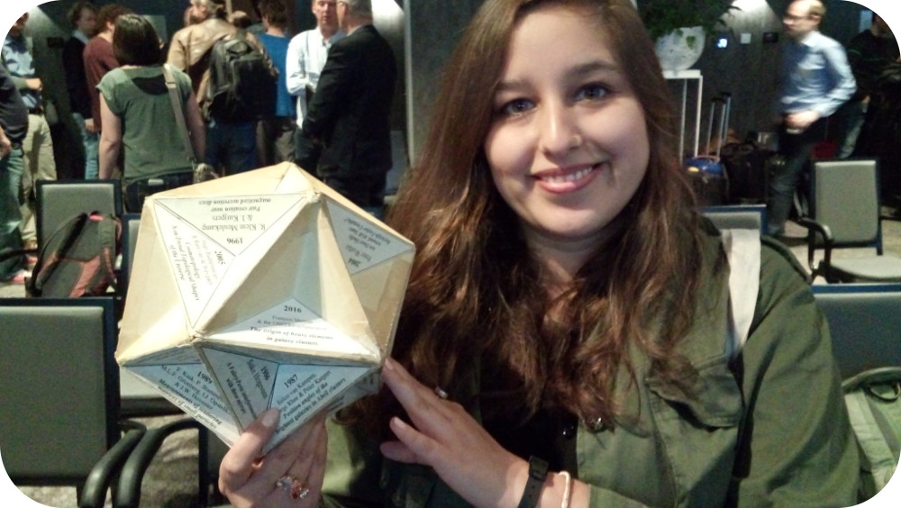

> talks & posters
Scientific talks, lectures and posters, and outreach talks for the general public.
-
2020
External photoevaporation of circumstellar discs constrains the time-scale for planet formation
-
Astronomy on Tap in Europe
-
2019
External photoevaporation of circumstellar discs constrains the time-scale for planet formation
-
Introduction to Computational Astrophysics
-
Nevertheless we persisted: Women in Astronomy
-
2018
Introduction to AMUSE
-
The viscous evolution of circumstellar disks in young star clusters
-
Multi-scale simulations with AMUSE
-
2017
The viscous evolution of protoplanetary disks inside young star clusters
-
Simulating the universe
-

The traditional NAC poster prize! -
The viscous evolution of protoplanetary disks inside young star clusters
-
Evolution of circumstellar disks in young stellar clusters